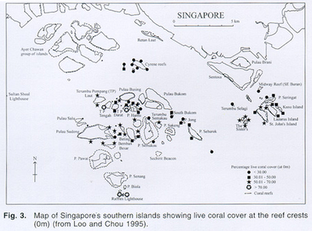
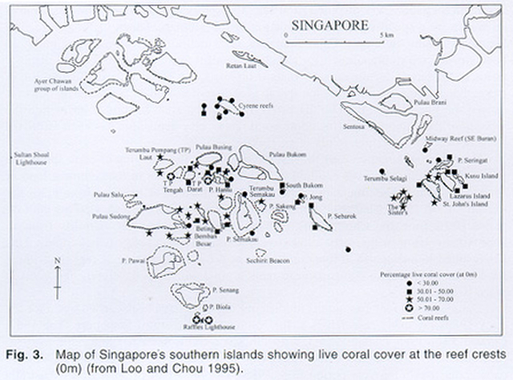

Survey data collected by the Reef Ecology Study Team and Blue Water Volunteers.
Back to top

Survey data collected by the Reef Ecology Study Team and Blue Water Volunteers.
Back to top
© Copyright 2013- Reef Ecology Lab, NUS. All Rights Reserved.
Design by TKB | templated